어로산업기사 (2002-05-26 기출문제)
1과목: 어구학
1. 막매듭 그물감 1필에 관한 내용 중 옳은 것은?
- 폭 100코, 길이 150 미터의 그물감
- 폭 100코, 길이 150 장대의 그물감
- 폭 150코, 길이 100 발의 그물감
- 폭 150코, 길이 100 미터의 그물감
(정답률: 91%)

2. 다음 그림중에서 콤비네이션 로우프는? (단, 검은 것은 와이어, 흰 것은 섬유)
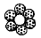
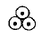
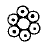
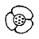
(정답률: 86%)
3. 그물실로 혼연사(混撚絲)를 사용하는 목적은?
- 실이 끊어져도 꼬임이 풀리기 어렵다.
- 사용할 때 킹크(Kink)가 생기지 않는다.
- 해저에서 사용할 때 펄이 축적되지 않는다.
- 각 섬유의 장점을 이용하고 결점을 보완한다.
(정답률: 91%)
4. 다음의 어구 중에서 그물실의 유연성이 가장 많이 요구되는 것은?
- 정치망
- 안강망
- 자망
- 건착망
(정답률: 80%)
5. 뜸 1kg의 부력이 가장 큰 것은?
- 오동나무
- 삼나무
- 옷나무
- 소나무
(정답률: 83%)
6. 다음 중 집어등이 가장 필요한 어업은?
- 조기자망
- 안강망
- 정치망
- 오징어 채낚기
(정답률: 92%)
7. 그림과 같은 운침법으로 편망하면 어떤 매듭이 맺어 지는가?
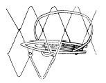
- 참매듭(바른 매듭)
- 막매듭
- 이중 참매듭
- 이중 막매듭
(정답률: 74%)
8. 다음 망지 중 권현망 끝자루에 쓰이는 망지는?
- 참매듭망지
- 여자망지
- 랏셀망지
- 직망지
(정답률: 88%)
9. 성능이 좋은 전개판이란 (A)에 비해 (B)가 더 큰 것이다. A,B로 적합한 것은?
- A : 전개력계수 B : 항력계수
- A : 항력계수 B : 전개력계수
- A : 면적 B : 무게
- A : 만곡도 B : 가로세로비
(정답률: 85%)
10. 다음 저자망에서 망목이 가장 큰 것은?
- 대구 자망
- 명태 자망
- 꽁치 자망
- 조기 자망
(정답률: 94%)
11. 3 : 1 의 감목비가 되는 사단 방법은?
- 1P 4B
- 1P 2B
- 1P 1B
- 3P 2B
(정답률: 80%)
12. 섬유 줄에서 줄의 항장력을 T = KD2 으로 표시할 때 K의 값이 제일 큰 것은?
- 테트론
- 폴리에틸렌
- 클레모나
- 마닐라삼
(정답률: 88%)
13. 통발의 모릿줄과 같이 침강력을 크게 하면서 양승기로 감아들이기 쉽도록 된 로프의 종류는?
- 혼연 로프
- 땋은 로프
- 포연 로프
- 연심 로프
(정답률: 83%)
14. 실의 무게를 기준으로 하여 굵기를 나타내는 것은?
- 번수식
- 데니어식
- 텍스식
- 호수식
(정답률: 83%)
15. 폭이 15코, 길이 42코의 삼각형 그물감을 손으로 뜨려면 몇 코를 떠내려가는 사이에 몇 코씩 줄여가야 하는가?
- 1코에 1코
- 2코에 1코
- 3코에 1코
- 4코에 1코
(정답률: 89%)
16. 다음 중 끝자루와 관계가 없는 명칭은?
- Band ring
- Band rope
- Fishing line
- Cod line
(정답률: 88%)
17. 예망어구의 망고는 예망속도가 커지면 어떻게 되는가?
- 작아진다.
- 커진다.
- 변화없다.
- 작아졌다 커졌다 한다.
(정답률: 72%)
18. 저인망에서 가장 필요하다고 생각되는 섬유의 성질은?
- 비중
- 유연성
- 내마찰성
- 투명성
(정답률: 85%)
19. 도면과 같은 ABCD의 그물감을 재단할려고 한다. CD변을 모두 bar cut 할 경우 AB변의 절단법으로 가장 합당한 것은?
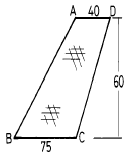
- 전사단(AB)
- 1p4b를 10회하고 1p3b를 26회 재단한다.
- 1p4b를 11회하고 1p3b를 24회 재단한다.
- 1p4b를 6회하고 1p3b를 30회 재단한다.
(정답률: 86%)
20. 그물감의 재단 방법 중에서 두발을 가로로 끊는 것을 무엇이라 하는가?
- point cut (P)
- mesh cut(M)
- bar cut (B)
- cut
(정답률: 88%)
2과목: 어업기기학
21. 어망감시장치(네트 레코더)의 탐지능력에 해당되지 않는 것은?
- 망구전개상태
- 그물의 전체길이
- 망구부근의 어군
- 해저의 상황
(정답률: 93%)
22. 프로펠러(propeller)를 돌려 이에 연결된 소형발전기가 발생하는 기전력을 이용하는 어업 계측기는?
- Underwater tension meter
- Current meter
- Under water thermometer
- Net height meter
(정답률: 94%)
23. 유압펌프 및 모우터의 장점 중에 속하지 않는 것은?
- 단위용적 중량에 대한 출력이 크다.
- Torque관성의 값이 크므로 고속 추종에 적합하다.
- 직선, 회전 양 운동중 어느 것이나 쉽게 얻을 수있다.
- 작동 유체에 입자 또는 공기가 들어가지 않도록 봉하기가 쉽다.
(정답률: 86%)
24. 알페로와 같은 진동자는 진동전류 1싸이클에 몇회의 변형이 일어나는가?
- 1회
- 2회
- 3회
- 4회
(정답률: 83%)
25. 수중 음파계에서 W watt의 음파에너지를 전방향으로 방출하고 있는 음원으로 부터 1m 거리의 음파강도 Io는?
- Io = 4π W
- Io = W/4π
- Io = 3π W
- Io = W/3π
(정답률: 72%)
26. Fish pump(물고기 펌프)의 원리는 다음 중 어떤 펌프의 원리와 같은가?
- 왕복 펌프
- 원심 펌프
- 프로펠러 펌프
- 선전 펌프
(정답률: 91%)
27. 다음중 전파를 이용한 어업 계측용 기구는?
- Fish finder
- Net height meter
- Net sonde
- Radio buoy
(정답률: 90%)
28. 다음 어업기기 중 감아올리는 방법이 마찰을 이용하고 있지 않는 것은?
- 양승기
- 트롤 윈치
- 사이드 드럼
- 포경 섬강 윈치
(정답률: 86%)
29. 양승기의 억압 로울러(Roller)의 역할은?
- 줄을 감아올릴 수 있는 원동력을 공급한다.
- 줄을 눌러서 감아올리는 마찰력을 높인다.
- 감아올리는 줄의 방향을 잡아준다.
- 감아올리는 풀리(Pulley)의 회전속도를 조절한다.
(정답률: 80%)
30. 양승기로 줄을 감을때 구동 pulley 의 양측 줄의 장력을 각각 T1, T2(T2 ＞ T1), 줄과 pulley 사이의 마찰계수 μ , 줄과 pulley 의 접촉중심각 θ 라고 할 때의 식은?
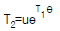
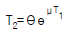
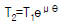
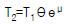
(정답률: 73%)
31. 선의 양망장치에 관계가 있는 것은?
- Trawl winch
- Turn table
- Side drum
- Gypsy drum
(정답률: 79%)
32. 다음의 장치 중 쌍끌이 기선저인망에서 사용하는 끌줄의 권양장치는?
- 윈치
- 라인 호울러
- 원추형 권통
- 네트 호울러
(정답률: 67%)
33. 수중의 두점간의 차압을 이용해서 트롤그물의 어귀높이, 자망의 수직 전개의 깊이등을 측정 기록하는 어업계측기는?
- 자기식 수중장력계
- 자기식 수중망고계
- 자기식 수중각도계
- 자기식 수중망심계
(정답률: 88%)
34. 송수파기 진동자 재료로서 티탄산 바륨 자기를 사용하는 방식은?
- 자의식
- 전의식
- 압전식
- 전자식
(정답률: 75%)
35. 양승기의 권양속도의 조정은 무엇에 따라서 결정되어야 하는가?
- 줄에 걸리는 장력
- 배의 속도
- 연승의 수중 무게
- 줄에 걸리는 장력과 배의 속도
(정답률: 89%)
36. 증폭기의 이득(증폭)의 단위로 dB(Decibel)를 많이 사용하고 있다. 그 정의는?
- 10 log10 출력에너지/입력에너지
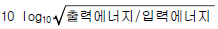
- 10 log10 출력에너지× 입력에너지
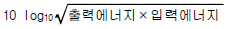
(정답률: 86%)
37. 어구를 감아 올리는데에 있어 현측의 로울러(sideroller)를 통하게 하는 어법은?
- 기선저인망 어법
- 트롤 어법
- 포경 어법
- 다랑어 주낙 어법
(정답률: 68%)
38. 권양 윈치에서 한 기어(Gear)의 반지름을 300mm, 회전수를 42rpm 이라 하면 이와 맞물고 있는 다른 기어의 반지름이 500mm 일 때 그 회전수는?
- 25.2 rpm
- 32.8 rpm
- 35.7 rpm
- 70 rpm
(정답률: 72%)
39. 트롤윈치(Trawl winch)의 동력은 양현의 각각 끝줄에 걸리는 장력을 T , 감아 올리는 속도를 v 라고 하면?
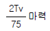
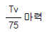
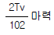
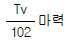
(정답률: 71%)
40. 어업기기를 대별하면 다음에서 가장 타당한 분류는?
- 어업기계류와 어업계측기류
- 양승기류와 어군탐지기류
- 양망기류와 망식계측기류
- 집어장치류와 수중송수상기류
(정답률: 91%)
3과목: 어장학
41. 다음과 같은 그림의 BT 결과를 얻었다. 이것은 어느 계절에 가장 많이 일어나는가?
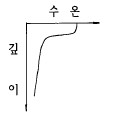
- 봄
- 여름
- 가을
- 겨울
(정답률: 88%)
42. 수온이 배사구조(thermoanticline)가 보여지는 어장과 어종은?
- 북해의 청어
- 열대 태평양의 다랑어
- 남빙양의 고래
- 지중해의 명태
(정답률: 89%)
43. 조경 어장의 형성과 특징에 관한 설명 중 잘못된 것은?
- 어족은 두 이질 해류의 접촉선 부근에 많다.
- 연안에서는 해류에의 접근으로 어군 밀도를 희박하게 한다.
- 해협부에 있어서는 양쪽 바다로부터 오는 해류의 접근으로 어군 밀도가 커진다.
- 한류계수와 난류계수가 접촉하는 부근에서는 주로 표층 회유성 어족이 밀집하게 된다.
(정답률: 88%)
44. 어류의 신진대사 과정에 가장 많은 영향을 미치는 환경 요소는?
- 염분
- 소리
- 수온
- 이산화탄소
(정답률: 92%)
45. 해수의 밀도와 관계가 가장 적은 것은?
- 수색
- 수온
- 염분
- 수심
(정답률: 74%)
46. 다음 중 어류가 환경수의 온도변화를 감지할 수 있는 최저 한계는?
- 약 1.0℃
- 약 0.02℃
- 약 0.⑤℃
- 약 0.1℃
(정답률: 84%)
47. 음향 측심기에 의해서 직접 관찰할 수 없는 것은?
- 어군의 흔적
- 수심
- 심산란층(DSL)
- 수온 약층
(정답률: 78%)
48. 바다의 깊이가 100m 증가할 때마다 증가하는 음속은?
- 약 4.5 m/sec
- 약 1.8 m/sec
- 약 1.3 m/sec
- 약 1 m/sec
(정답률: 82%)
49. 수계의 생태계에서 분해자에 해당하는 것은?
- 갑각류
- 규조류
- 녹조류
- 균류
(정답률: 87%)
50. 다음 중에서 용승역과 어획되는 주 어종을 바르게 짝진 것은?
- 캘리포니아 연안 - 정어리, 날개다랑어
- 페류 연안 - 고등어, 전갱이
- 코스타리카 근해 - 가다랭어
- 소말리아 연안 - 정어리
(정답률: 77%)
51. 다음 중 대륙붕상의 좋은 어장과 주된 어획물로 바르게 짝지워진 것은?
- 북해 - 명태, 새우
- 북아메리카의 뉴우펀들랜드 근해 - 멸치
- 베링해 - 명태, 대구, 게
- 아프리카 서안 - 다랑어
(정답률: 88%)
52. 찬공기가 따뜻한 해면을 지날 때 생기는 안개는?
- 김 안개
- 이류 안개
- 복사 안개
- 전선 안개
(정답률: 83%)
53. 해양 생물의 생태적 분류 방법에 속하지 않는 것은?
- 저서생물
- 중층생물
- 부유생물
- 유영생물
(정답률: 82%)
54. 다음 중 파도의 요소에 포함되지 않는 것은?
- 파장
- 파고
- 주기
- 파향
(정답률: 92%)
55. 선박이 항주하면서 직접 측류할 수 있는 것은?
- 에크만 멜츠 유속계
- 전자해류계(G.E.K)
- 해류병
- 해류판
(정답률: 82%)
56. 그림과 같은 환경에서 어장이 형성된다면 어군의 체류와 밀집이 일어나는 위치는?
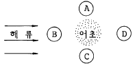
- A
- B
- C
- D
(정답률: 89%)
57. 다음 중 어류의 수평분포와 관계가 가장 적은 사항은?
- 어류의 나이
- 먹이
- 염분
- 빛의 강도
(정답률: 80%)
58. 우리나라의 삼한사온 날씨와 관계있는 기압배치는?
- 남고북저형
- 서고남저형
- 서고동저형
- 동고서저형
(정답률: 81%)
59. 어류산란기에 수온이 비정상적으로 낮아질 때 나타나는 현상은?
- 산란시기가 빨라진다.
- 부화시간이 짧아진다.
- 산란장이 이동된다.
- 산란기간이 길어진다.
(정답률: 81%)
60. 표면수온을 측정하기 위하여 채수 바스켓으로 물을 퍼올려 봉상온도계를 일정시간 후에 읽는다. 이때 채수 수심과 봉상온도계의 측정시간은 얼마나 되어야 하는가?
- 수심 0.5m 이내, 40-60초
- 수심 0.5m 이내, 3분
- 수심 1-2m, 40-60초
- 수심 1-2m, 5분
(정답률: 72%)
4과목: 어법학
61. 기선 권현망에서 조류가 강할 때의 예망 방법 중 맞는 것은?
- 조류를 거슬러 예망
- 조류를 따라 예망
- 조류의 방향과 수직으로 예망
- 조류의 방향에는 상관 없다.
(정답률: 94%)
62. 권현망 어업에서 어로장이 탑승하여 조업의 총지휘를 하는 선박은?
- 운반선
- 망선
- 가공선
- 어탐선
(정답률: 88%)
63. 유자망에서 순대말이 현상을 방지하기 위한 대책중 타당하지 못한 것은?
- 조경어장 가까이에서 조업한다.
- 뜸줄의 꼬임이 안정된 것을 사용한다.
- 뜸줄의 길이에 비해 발줄을 약간 짧게 한다.
- 부력을 너무 크지 않게 한다.
(정답률: 86%)
64. 어구의 전개장치가 없고 투망 후 일정시간이 지나면 그물의 전개폭이 자연히 오므라져서 양망하지 않으면 안되는 어법은?
- 외끌이 기선저인망
- 쌍끌이 기선저인망
- 선미트롤
- 현측식 트롤
(정답률: 63%)
65. 다음은 안강망 어법의 투망 순서(조업순서)이다. 맞는 것은 어느 것인가?
- 배잡이줄→ 그물→ 전개장치(범포)→ 큰닻
- 그물→ 전개장치(범포)→ 큰닻→ 배잡이줄
- 큰닻→ 배잡이줄→ 그물→ 전개장치(범포)
- 전개장치(범포)→ 큰닻→ 배잡이줄→ 그물
(정답률: 85%)
66. 꽁치의 주광성에 관한 설명 중 올바르지 못한 것은?
- 섭이량이 작을수록 주광성이 크다.
- 산란군이 주광성이 약하다.
- 생식소의 숙도가 미숙일수록 주광성이 크다.
- 달빛은 집어효과를 증가시킨다.
(정답률: 87%)
67. 민어과 어족(민어,조기,부세등)은 부레를 이용하여 독특한 소리를 낸다. 다음 중 어느 시기에 이 현상이 가장 심한가?
- 치어기
- 월동기
- 회유기
- 산란기
(정답률: 87%)
68. 다랑어 어획물의 보장 방법 중 틀린 것은?
- 빙장법
- 공빙법
- 수빙법
- 급속동결법
(정답률: 81%)
69. 다랑어 주낚 투승시 고려해야 할 사항 중 틀린 것은?
- 바람 위에서 바람 아래로 투승
- 해류에 대해서 평행하게 투승
- 해류에 대해서 직각으로 투승
- 해류가 강하면 비스듬히 투승
(정답률: 78%)
70. 강한 조류를 이용하여 어군을 강제로 어구안에 몰아 넣는 어법은?
- 낭장망어법
- 유자망어법
- 들망어법
- 권현망어법
(정답률: 90%)
71. 미끼를 쓰지 않고도 낚을 수 있는 어종은?
- 오징어
- 다랑어
- 새치류
- 도미류
(정답률: 91%)
72. 다음 어법중 가장 소극적인 어법에 속하는 것은?
- 트롤어법
- 건착망 어법
- 낙망어법
- 자망어법
(정답률: 59%)
73. 다음의 가다랭어 어업의 특성에 관한 글 중 틀린 것은?
- 가다랭어의 회유는 수온 및 해류와 관계가 깊다.
- 낚는 기술을 습득하는데 수년의 기간을 요한다.
- 어군의 탐색이 타 어업보다 용이하다.
- 남획(over Fishing)의 우려가 없다.
(정답률: 58%)
74. 안강망 조업시 양망은 어느 시기에 하는가?
- 조류의 방향이 바뀐후
- 조류의 방향이 바뀌기 직전
- 조류의 방향이 바뀌는 중간
- 조류의 방향에 상관 없다.
(정답률: 81%)
75. 헛통에서 머물던 고기가 비탈 그물을 거처 원통으로 들어가 어획이 보다 확실시 되는 어법은?
- 승망
- 낙망
- 낭장망
- 대부망
(정답률: 80%)
76. 조업을 할 때 계획 예망침로 선상에서 계획적인 예망과 저격적 어법을 실시할 수 있는 어법은?
- 자망 어법
- 안강망 어법
- 선미식 트롤 어법
- 정치망 어법
(정답률: 77%)
77. 안강망 어법의 개량식 어구에 해당되는 것은?
- 어구를 전개시키기 위하여 수해가 있다.
- 어구를 전개시키기 위하여 암해가 있다.
- 아궁이의 양옆에 범포가 붙여 있다.
- 아궁이의 상하변에 뜸줄과 발줄이 없다.
(정답률: 90%)
78. 다음의 여러가지 어업중에서 표중층의 농밀어군을 어획하는데 가장 능률적인 어법은?
- 정치망
- 안강망
- 선미트롤
- 건착망
(정답률: 77%)
79. 선망 어업의 주요 대상 어종은?
- 도미, 볼락
- 명태, 대구
- 고등어, 쥐치
- 멸치, 조기
(정답률: 89%)
80. 트롤선이 예망중 뻘을 뜨는 사고가 일어날 원인이 될 수 있는 것은?
- 발줄이 너무 가볍기 때문
- 예망속도가 너무 빠르기 때문
- 배를 빨리 돌리기 때문
- 끌줄을 너무 길게 주기 때문
(정답률: 79%)